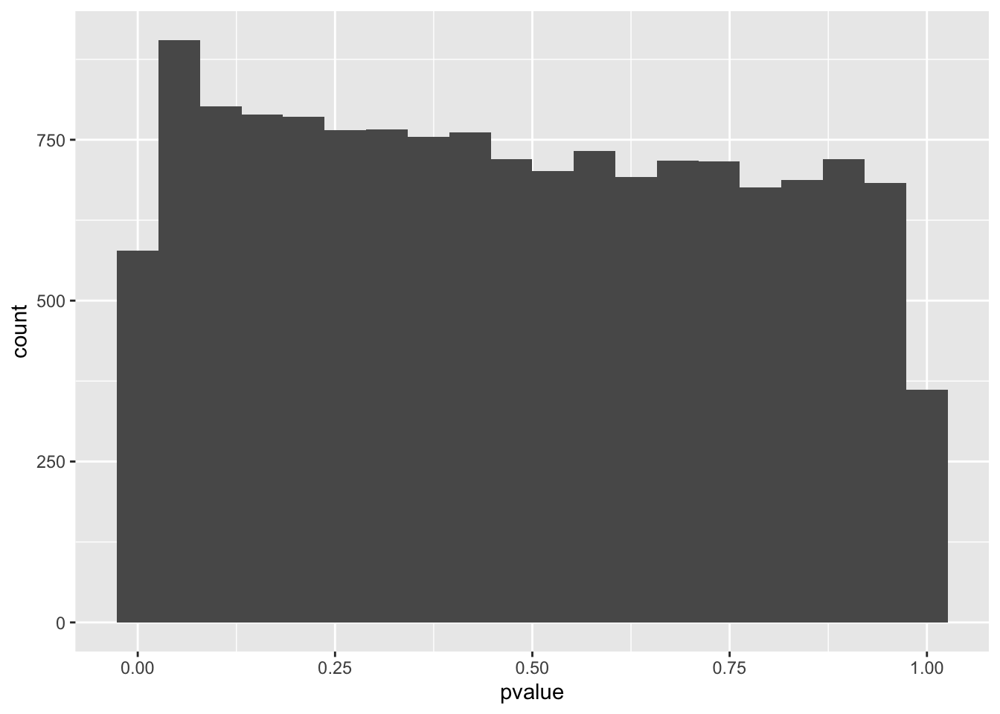
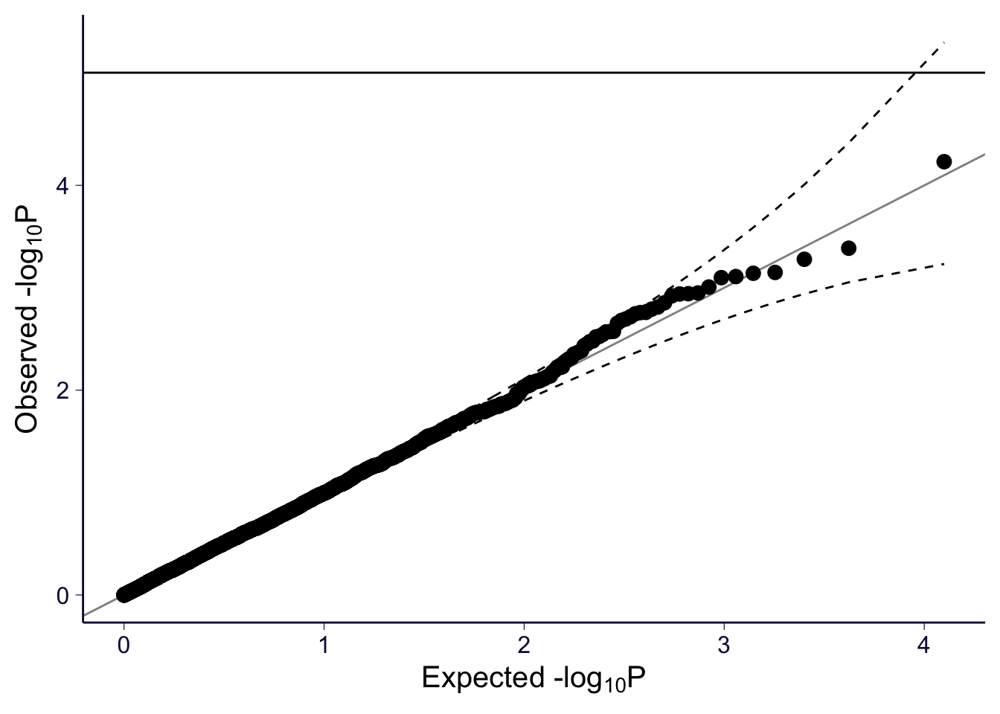

Last updated: 2020-07-17
Checks: 6 1
Knit directory: psychencode/
This reproducible R Markdown analysis was created with workflowr (version 1.6.2). The Checks tab describes the reproducibility checks that were applied when the results were created. The Past versions tab lists the development history.
Great! Since the R Markdown file has been committed to the Git repository, you know the exact version of the code that produced these results.
Great job! The global environment was empty. Objects defined in the global environment can affect the analysis in your R Markdown file in unknown ways. For reproduciblity it’s best to always run the code in an empty environment.
The command set.seed(20200622) was run prior to running the code in the R Markdown file. Setting a seed ensures that any results that rely on randomness, e.g. subsampling or permutations, are reproducible.
Great job! Recording the operating system, R version, and package versions is critical for reproducibility.
Nice! There were no cached chunks for this analysis, so you can be confident that you successfully produced the results during this run.
Using absolute paths to the files within your workflowr project makes it difficult for you and others to run your code on a different machine. Change the absolute path(s) below to the suggested relative path(s) to make your code more reproducible.
| absolute | relative |
|---|---|
| /Users/sabrinami/Github/psychencode | . |
Great! You are using Git for version control. Tracking code development and connecting the code version to the results is critical for reproducibility.
The results in this page were generated with repository version a2d4866. See the Past versions tab to see a history of the changes made to the R Markdown and HTML files.
Note that you need to be careful to ensure that all relevant files for the analysis have been committed to Git prior to generating the results (you can use wflow_publish or wflow_git_commit). workflowr only checks the R Markdown file, but you know if there are other scripts or data files that it depends on. Below is the status of the Git repository when the results were generated:
Untracked files:
Untracked: .DS_Store
Untracked: models/
Untracked: output/.DS_Store
Untracked: output/test_results/
Note that any generated files, e.g. HTML, png, CSS, etc., are not included in this status report because it is ok for generated content to have uncommitted changes.
These are the previous versions of the repository in which changes were made to the R Markdown (analysis/test_alcdep.Rmd) and HTML (docs/test_alcdep.html) files. If you’ve configured a remote Git repository (see ?wflow_git_remote), click on the hyperlinks in the table below to view the files as they were in that past version.
| File | Version | Author | Date | Message |
|---|---|---|---|---|
| Rmd | cd613c1 | sabrina-mi | 2020-07-14 | don’t know whats going on with clozuk gwas, but pgc gwas works well |
| Rmd | d9957ad | sabrina-mi | 2020-07-10 | GTEx model working |
| Rmd | 643fdaa | sabrina-mi | 2020-07-08 | predixcan tests |
I used a GWAS of alcohol dependence to test S-PrediXcan on the psychencode model against PredictDB models trained using GTEx v7 data, subsampled to use European samples. The GWAS was performed on unrelated genotyped individuals of European ancestry, with 8,485 cases and 20,272 controls. More info on the study: https://www.biorxiv.org/content/early/2018/03/10/257311. Download the GWAS: https://www.med.unc.edu/pgc/download-results/, filter by Alcohol, the Alcohol Dependence. The GTEx models can be downloaded on predictdb.org or with wget "https://zenodo.org/record/3572799/files/GTEx-V7_HapMap-2017-11-29.tar.gz"
conda activate imlabtools
METAXCAN=/Users/sabrinami/Github/MetaXcan/software
MODEL=/Users/sabrinami/Github/psychencode/models
RESULTS=/Users/sabrinami/Github/psychencode/output/test_results
DATA=/Users/sabrinami/Desktop/psychencode_test_dataprintf "Predict expression with Psychencode model\n\n"
python3 $METAXCAN/Predict.py \
--model_db_path $MODEL/psychencode_model/psychencode.db \
--vcf_genotypes $DATA/1000G_hg37/ALL.chr1.phase3_shapeit2_mvncall_integrated_v5a.20130502.genotypes.vcf.gz \
--vcf_mode genotyped \
--prediction_output $RESULTS/predixcan/psychencode__predict.txt \
--prediction_summary_output $RESULTS/predixcan/psychencode__summary.txt \
--verbosity 9 \
--throwprintf "Predict expression with Brain Cortex model\n\n"
python3 $METAXCAN/Predict.py \
--model_db_path $MODEL/GTEx-V7-en/gtex_v7_Brain_Cortex_imputed_europeans_tw_0.5_signif.db \
--vcf_genotypes $DATA/1000G_hg37/ALL.chr1.phase3_shapeit2_mvncall_integrated_v5a.20130502.genotypes.vcf.gz \
--vcf_mode genotyped \
--prediction_output $RESULTS/predixcan/Brain_Cortex__predict.txt \
--prediction_summary_output $RESULTS/predixcan/Brain_Cortex__summary.txt \
--verbosity 9 \
--throwprintf "Predict expression with Whole Blood model\n\n"
python3 $METAXCAN/Predict.py \
--model_db_path $MODEL/GTEx-V7-en/gtex_v7_Whole_Blood_imputed_europeans_tw_0.5_signif.db \
--vcf_genotypes $DATA/1000G_hg37/ALL.chr1.phase3_shapeit2_mvncall_integrated_v5a.20130502.genotypes.vcf.gz \
--vcf_mode genotyped \
--prediction_output $RESULTS/predixcan/Whole_Blood__predict.txt \
--prediction_summary_output $RESULTS/predixcan/Whole_Blood__summary.txt \
--verbosity 9 \
--throwRun S-PrediXcan on alcohol dependence GWAS with psychencode model, then repeat with GTEx-V7-en Brain Cortex and Whole Blood models.
python3 $METAXCAN/SPrediXcan.py --gwas_file $DATA/pgc_alcdep.aug2018_release/pgc_alcdep.eur_unrel_genotyped.aug2018_release.txt.gz \
--model_db_path $MODEL/psychencode_model/psychencode.db \
--covariance $MODEL/psychencode_model/psychencode.txt.gz \
--output_file $RESULTS/spredixcan/eqtl/pgc_alcdep/pgc_alcdep.eur_psychencode.csv \
--or_column OR \
--pvalue_column P \
--snp_column SNP \
--non_effect_allele_column A2 \
--effect_allele_column A1 \
--separator " "printf "GTEx Brain Cortex model\n\n"
python3 $METAXCAN/SPrediXcan.py --gwas_file $DATA/pgc_alcdep.aug2018_release/pgc_alcdep.eur_unrel_genotyped.aug2018_release.txt.gz \
--model_db_path $MODEL/GTEx-V7-en/gtex_v7_Brain_Cortex_imputed_europeans_tw_0.5_signif.db \
--covariance $MODEL/GTEx-V7-en/gtex_v7_Brain_Cortex_imputed_eur_covariances.txt.gz \
--overwrite --throw --verbosity 1 \
--output_file $RESULTS/spredixcan/eqtl/pgc_alcdep/pgc_alcdep.eur_Brain_Cortex.csv \
--or_column OR \
--pvalue_column P \
--snp_column SNP \
--non_effect_allele_column A2 \
--effect_allele_column A1 > alcdep_Brain_Cortex_output.txt 2>&1
printf "GTEx Whole Blood model\n\n"
python3 $METAXCAN/SPrediXcan.py --gwas_file $DATA/pgc_alcdep.aug2018_release/pgc_alcdep.eur_unrel_genotyped.aug2018_release.txt.gz \
--model_db_path $MODEL/GTEx-V7-en/gtex_v7_Whole_Blood_imputed_europeans_tw_0.5_signif.db \
--covariance $MODEL/GTEx-V7-en/gtex_v7_Whole_Blood_imputed_eur_covariances.txt.gz \
--output_file $RESULTS/spredixcan/eqtl/pgc_alcdep/pgc_alcdep.eur_Whole_Blood.csv \
--or_column OR \
--pvalue_column P \
--snp_column SNP \
--non_effect_allele_column A2 \
--effect_allele_column A1 \
--separator " "PRE="/Users/sabrinami/Github/psychencode"
DATA="/Users/sabrinami/Desktop/psychencode_test_data"
RESULTS=glue::glue("{PRE}/output/test_results")
CODE=glue::glue("{PRE}/code")
source(glue::glue("{CODE}/load_data_functions.R"))
source(glue::glue("{CODE}/plotting_utils_functions.R"))
suppressPackageStartupMessages(library(tidyverse))
suppressPackageStartupMessages(library(qqman))
gencode_df = load_gencode_df()Load prediction outputs into R.
prediction_fp_Whole_Blood = glue::glue("{RESULTS}/predixcan/Whole_Blood__predict.txt")
## Read the Predict.py output into a dataframe. This function reorganizes the data and adds gene names.
predicted_expression_Whole_Blood = load_predicted_expression(prediction_fp_Whole_Blood, gencode_df)
head(predicted_expression_Whole_Blood)# A tibble: 6 x 7
FID IID gene_id predicted_expres… gene_name chromosome region_id
<fct> <fct> <chr> <dbl> <fct> <fct> <fct>
1 HG000… HG000… ENSG00000… -1.08 RP11-206L… chr1 region_chr1_…
2 HG000… HG000… ENSG00000… -0.302 ATAD3C chr1 region_chr1_…
3 HG000… HG000… ENSG00000… -0.265 FAM87B chr1 region_chr1_…
4 HG000… HG000… ENSG00000… -1.35 LINC00115 chr1 region_chr1_…
5 HG000… HG000… ENSG00000… -2.67 TAS1R3 chr1 region_chr1_…
6 HG000… HG000… ENSG00000… -0.0710 SSU72 chr1 region_chr1_…## read summary of prediction, number of SNPs per gene, cross validated prediction performance
prediction_summary_Whole_Blood = load_prediction_summary(glue::glue("{RESULTS}/predixcan/Whole_Blood__summary.txt"), gencode_df)
## number of genes with a prediction model
dim(prediction_summary_Whole_Blood)[1] 6297 8head(prediction_summary_Whole_Blood) gene n_snps_in_model n_snps_used pred_perf_r2 pred_perf_pval
1 ENSG00000000457 19 19 0.06784837 1.786471e-06
2 ENSG00000000460 31 31 0.04532282 1.499214e-04
3 ENSG00000000938 9 9 0.01759910 1.954026e-02
4 ENSG00000001084 2 NA 0.02652882 3.875334e-03
5 ENSG00000001167 17 NA 0.03930124 4.607071e-04
6 ENSG00000001460 11 11 0.04711175 1.132466e-04
gene_name chromosome region_id
1 SCYL3 chr1 region_chr1_169117086_170588635
2 C1orf112 chr1 region_chr1_169117086_170588635
3 FGR chr1 region_chr1_27075376_29689034
4 GCLC chr6 region_chr6_53414304_55603472
5 NFYA chr6 region_chr6_40377376_42070983
6 STPG1 chr1 region_chr1_23594100_25190354prediction_fp_psychencode = glue::glue("{RESULTS}/predixcan/psychencode__predict.txt")
predicted_expression_psychencode = load_predicted_expression(prediction_fp_psychencode, gencode_df)
head(predicted_expression_psychencode)# A tibble: 6 x 7
FID IID gene_id predicted_expres… gene_name chromosome region_id
<fct> <fct> <chr> <dbl> <fct> <fct> <fct>
1 HG000… HG000… ENSG00000… -0.0890 ISG15 chr1 region_chr1_1…
2 HG000… HG000… ENSG00000… -0.0231 HES4 chr1 region_chr1_1…
3 HG000… HG000… ENSG00000… -0.0429 ATAD3B chr1 region_chr1_1…
4 HG000… HG000… ENSG00000… -0.00230 MXRA8 chr1 region_chr1_1…
5 HG000… HG000… ENSG00000… -0.0121 PERM1 chr1 region_chr1_1…
6 HG000… HG000… ENSG00000… 0.170 ATAD3C chr1 region_chr1_1…prediction_summary_psychencode = load_prediction_summary(glue::glue("{RESULTS}/predixcan/psychencode__summary.txt"), gencode_df)
dim(prediction_summary_psychencode)[1] 14378 8head(prediction_summary_psychencode) gene n_snps_in_model n_snps_used pred_perf_r2 pred_perf_pval
1 ENSG00000000457 26 26 NA NA
2 ENSG00000000460 48 48 NA NA
3 ENSG00000000971 21 19 NA NA
4 ENSG00000001036 14 NA NA NA
5 ENSG00000001084 41 NA NA NA
6 ENSG00000001167 9 NA NA NA
gene_name chromosome region_id
1 SCYL3 chr1 region_chr1_169117086_170588635
2 C1orf112 chr1 region_chr1_169117086_170588635
3 CFH chr1 region_chr1_196207071_197342384
4 FUCA2 chr6 region_chr6_141967342_144998674
5 GCLC chr6 region_chr6_53414304_55603472
6 NFYA chr6 region_chr6_40377376_42070983prediction_fp_Brain_Cortex = glue::glue("{RESULTS}/predixcan/Brain_Cortex__predict.txt")
predicted_expression_Brain_Cortex = load_predicted_expression(prediction_fp_Brain_Cortex, gencode_df)
head(predicted_expression_Brain_Cortex)# A tibble: 6 x 7
FID IID gene_id predicted_expres… gene_name chromosome region_id
<fct> <fct> <chr> <dbl> <fct> <fct> <fct>
1 HG000… HG000… ENSG00000… 0.0873 TNFRSF4 chr1 region_chr1_1…
2 HG000… HG000… ENSG00000… -0.883 LINC00115 chr1 region_chr1_1…
3 HG000… HG000… ENSG00000… 0.0372 SLC35E2 chr1 region_chr1_1…
4 HG000… HG000… ENSG00000… 0.773 RP1-283E… chr1 region_chr1_1…
5 HG000… HG000… ENSG00000… 0.487 NDUFB4P8 chr1 region_chr1_1…
6 HG000… HG000… ENSG00000… 1.89 MXRA8 chr1 region_chr1_1…prediction_summary_Brain_Cortex = load_prediction_summary(glue::glue("{RESULTS}/predixcan/Brain_Cortex__summary.txt"), gencode_df)
dim(prediction_summary_Brain_Cortex)[1] 4332 8head(prediction_summary_Brain_Cortex) gene n_snps_in_model n_snps_used pred_perf_r2 pred_perf_pval
1 ENSG00000000419 115 NA 0.05285449 1.509551e-02
2 ENSG00000001084 10 NA 0.11134301 3.222470e-04
3 ENSG00000002016 21 NA 0.26224973 1.146342e-09
4 ENSG00000002549 7 NA 0.07884824 2.493767e-03
5 ENSG00000002933 40 NA 0.12714419 4.978505e-05
6 ENSG00000003056 26 NA 0.04939641 1.950023e-02
gene_name chromosome region_id
1 DPM1 chr20 region_chr20_50623121_53856010
2 GCLC chr6 region_chr6_53414304_55603472
3 RAD52 chr12 region_chr12_44631_971165
4 LAP3 chr4 region_chr4_17381699_18840251
5 TMEM176A chr7 region_chr7_150143569_151014417
6 M6PR chr12 region_chr12_8878799_10328935Load observed expression.
observed_expression = read.csv(glue::glue("{DATA}/GEUVADIS.observed_df.csv"))Merge predicted expression with observed expression, and calculate correlation between predicted and observed expression for each model.
merged_Whole_Blood = merge(predicted_expression_Whole_Blood, observed_expression, by = c("gene_id", "IID"))
# calculate correlation between predicted and observed expression for each gene
correlation_Whole_Blood = merged_Whole_Blood %>% group_by(gene_id) %>% summarise(corr = cor(predicted_expression, observed_expression, method = "spearman"))
summary(correlation_Whole_Blood) gene_id corr
Length:560 Min. :-0.495534
Class :character 1st Qu.:-0.008388
Mode :character Median : 0.059699
Mean : 0.076672
3rd Qu.: 0.137423
Max. : 0.831743 merged_psychencode = merge(predicted_expression_psychencode, observed_expression, by = c("gene_id", "IID"))
# calculate correlation between predicted and observed expression for each gene
correlation_psychencode = merged_psychencode %>% group_by(gene_id) %>% summarise(corr = cor(predicted_expression, observed_expression, method = "spearman"))
summary(correlation_psychencode) gene_id corr
Length:1151 Min. :-0.55006
Class :character 1st Qu.:-0.02436
Mode :character Median : 0.02961
Mean : 0.04690
3rd Qu.: 0.09639
Max. : 0.86425 merged_Brain_Cortex = merge(predicted_expression_Brain_Cortex, observed_expression, by = c("gene_id", "IID"))
# calculate correlation between predicted and observed expression for each gene
correlation_Brain_Cortex = merged_Brain_Cortex %>% group_by(gene_id) %>% summarise(corr = cor(predicted_expression, observed_expression, method = "spearman"))
summary(correlation_Brain_Cortex) gene_id corr
Length:334 Min. :-0.53217
Class :character 1st Qu.:-0.02136
Mode :character Median : 0.03431
Mean : 0.06777
3rd Qu.: 0.12802
Max. : 0.84747 Load S-PrediXcan association output into R, and check for significant genes.
spredixcan_association_psychencode = load_spredixcan_association(glue::glue("{RESULTS}/spredixcan/eqtl/pgc_alcdep/pgc_alcdep.eur_psychencode.csv"), gencode_df)
dim(spredixcan_association_psychencode)[1] 14348 14spredixcan_association_psychencode %>% filter(pvalue < 0.05/nrow(spredixcan_association_psychencode)) [1] gene zscore effect_size pvalue
[5] var_g pred_perf_r2 pred_perf_pval pred_perf_qval
[9] n_snps_used n_snps_in_cov n_snps_in_model gene_name
[13] chromosome region_id
<0 rows> (or 0-length row.names)spredixcan_association_Brain_Cortex = load_spredixcan_association(glue::glue("{RESULTS}/spredixcan/eqtl/pgc_alcdep/pgc_alcdep.eur_Brain_Cortex.csv"), gencode_df)
dim(spredixcan_association_Brain_Cortex)[1] 4323 14spredixcan_association_Brain_Cortex %>% filter(pvalue < 0.05/nrow(spredixcan_association_Brain_Cortex)) [1] gene zscore effect_size pvalue
[5] var_g pred_perf_r2 pred_perf_pval pred_perf_qval
[9] n_snps_used n_snps_in_cov n_snps_in_model gene_name
[13] chromosome region_id
<0 rows> (or 0-length row.names)spredixcan_association_Brain_Cortex %>% arrange(pvalue) %>% select(gene, pvalue) %>% head gene pvalue
1 ENSG00000230528 0.0006159278
2 ENSG00000153291 0.0009708806
3 ENSG00000100395 0.0018640389
4 ENSG00000158270 0.0027746399
5 ENSG00000215504 0.0030597439
6 ENSG00000133107 0.0031635336spredixcan_association_Whole_Blood = load_spredixcan_association(glue::glue("{RESULTS}/spredixcan/eqtl/pgc_alcdep/pgc_alcdep.eur_Whole_Blood.csv"), gencode_df)
dim(spredixcan_association_Whole_Blood)[1] 6289 14spredixcan_association_Whole_Blood %>% filter(pvalue < 0.05/nrow(spredixcan_association_Whole_Blood)) [1] gene zscore effect_size pvalue
[5] var_g pred_perf_r2 pred_perf_pval pred_perf_qval
[9] n_snps_used n_snps_in_cov n_snps_in_model gene_name
[13] chromosome region_id
<0 rows> (or 0-length row.names)spredixcan_association_Whole_Blood %>% arrange(pvalue) %>% select(gene, pvalue) %>% head gene pvalue
1 ENSG00000062282 5.877502e-05
2 ENSG00000230207 4.113094e-04
3 ENSG00000115758 5.272995e-04
4 ENSG00000070087 7.088832e-04
5 ENSG00000244691 7.224511e-04
6 ENSG00000111886 7.780464e-04Manhattan plot and qq plot for alcohol dependence GWAS. There’s only one or two significant peaks.
alcdep_GWAS = read.table(glue::glue("{DATA}/pgc_alcdep.aug2018_release/pgc_alcdep.eur_unrel_genotyped.aug2018_release.txt.gz"), header=TRUE, sep=" ")
manhattan(alcdep_GWAS, chr="CHR", bp="BP", snp="SNP", p="P" )
gg_qqplot(alcdep_GWAS$P)Plot p-values of association output.
spredixcan_association_Brain_Cortex %>% arrange(pvalue) %>% ggplot(aes(pvalue)) + geom_histogram(bins=20)gg_qqplot(spredixcan_association_Brain_Cortex$pvalue)spredixcan_association_psychencode %>% arrange(pvalue) %>% ggplot(aes(pvalue)) + geom_histogram(bins=20)Warning: Removed 32 rows containing non-finite values (stat_bin).
gg_qqplot(spredixcan_association_psychencode$pvalue)Brain_Cortex_psychencode_association = inner_join(spredixcan_association_Brain_Cortex, spredixcan_association_psychencode, by=c("gene"))
dim(Brain_Cortex_psychencode_association)[1] 3414 27Brain_Cortex_psychencode_association %>% ggplot(aes(zscore.x, zscore.y)) + geom_point()Warning: Removed 6 rows containing missing values (geom_point).spredixcan_association_Whole_Blood %>% arrange(pvalue) %>% ggplot(aes(pvalue)) + geom_histogram(bins=20)gg_qqplot(spredixcan_association_Whole_Blood$pvalue)
sessionInfo()R version 3.6.2 (2019-12-12)
Platform: x86_64-apple-darwin15.6.0 (64-bit)
Running under: macOS Mojave 10.14.6
Matrix products: default
BLAS: /Library/Frameworks/R.framework/Versions/3.6/Resources/lib/libRblas.0.dylib
LAPACK: /Library/Frameworks/R.framework/Versions/3.6/Resources/lib/libRlapack.dylib
locale:
[1] en_US.UTF-8/en_US.UTF-8/en_US.UTF-8/C/en_US.UTF-8/en_US.UTF-8
attached base packages:
[1] stats graphics grDevices utils datasets methods base
other attached packages:
[1] qqman_0.1.4 forcats_0.4.0 stringr_1.4.0 dplyr_0.8.3
[5] purrr_0.3.3 readr_1.3.1 tidyr_1.0.0 tibble_2.1.3
[9] ggplot2_3.3.0 tidyverse_1.3.0
loaded via a namespace (and not attached):
[1] Rcpp_1.0.3 lubridate_1.7.4 lattice_0.20-38 assertthat_0.2.1
[5] zeallot_0.1.0 rprojroot_1.3-2 digest_0.6.23 utf8_1.1.4
[9] R6_2.4.1 cellranger_1.1.0 backports_1.1.5 reprex_0.3.0
[13] evaluate_0.14 httr_1.4.1 highr_0.8 pillar_1.4.3
[17] rlang_0.4.2 readxl_1.3.1 rstudioapi_0.10 whisker_0.4
[21] rmarkdown_2.1 labeling_0.3 munsell_0.5.0 broom_0.5.3
[25] compiler_3.6.2 httpuv_1.5.3.1 modelr_0.1.5 xfun_0.12
[29] pkgconfig_2.0.3 htmltools_0.4.0 tidyselect_0.2.5 workflowr_1.6.2
[33] fansi_0.4.1 calibrate_1.7.7 crayon_1.3.4 dbplyr_1.4.2
[37] withr_2.1.2 later_1.0.0 MASS_7.3-51.4 grid_3.6.2
[41] nlme_3.1-142 jsonlite_1.6 gtable_0.3.0 lifecycle_0.1.0
[45] DBI_1.1.0 git2r_0.27.1 magrittr_1.5 scales_1.1.0
[49] cli_2.0.1 stringi_1.4.5 farver_2.0.3 fs_1.3.1
[53] promises_1.1.0 xml2_1.2.2 generics_0.0.2 vctrs_0.2.1
[57] tools_3.6.2 glue_1.3.1 hms_0.5.3 yaml_2.2.0
[61] colorspace_1.4-1 rvest_0.3.5 knitr_1.27 haven_2.2.0